Explorable image-to-scene generation is essential for applications in gaming, robotics, and virtual reality. Existing methods based on video diffusion model (VDM) commonly rely on incomplete conditioning signals such as sparse point clouds or 2D panoramas, leading to stochastic hallucinations, long-term drifts and suboptimal 3D consistency. We present SpatialCrafter , a novel two-stage framework that addresses these issues by introducing a global 3D proxy for high-fidelity image-to-scene generation. Specifically, we decompose the generation process into global proxy generation and appearance refinement. For proxy generation, we propose a Point-anchored Sparse Structure~(PaSS) Flow module that predicts a spatially aligned and geometrically consistent 3D proxy. For appearance refinement, we re-frame the VDM as a Generative Deferred Refiner which synthesizes high-frequency photorealistic details upon proxy-defined scene geometry. To better integrate the proxy with the pre-trained VDM, we introduce Parallel Geometry Injection and Proxy-Aware Corruption training strategies, which improve robustness to proxy artifacts without disrupting the pretrained generative manifold. Furthermore, as no suitable dataset exists for this explorable scene generation task, we construct a new large-scale dataset of 115K scenes. To the best of our knowledge, it is the first hybrid dataset for (native) image-to-scene generation. Extensive experiments on both synthetic and real-world datasets show that SpatialCrafter outperforms state-of-the-art methods, mitigates long-term drift, and remains robust and consistent under rapid camera motion and extreme viewpoint changes.
Overview of SpatialCrafter: Given a single image and a camera trajectory, we first construct a global 3D proxy using a native 3D generator with Point-Anchored Sparse Structure (PaSS) Flow Matching. This proxy then serves as a reliable coarse 3D prior for the Generative Deferred Refiner, which transforms it into photorealistic RGB-D video sequences via Parallel Geometry Injection and Proxy-Aware Corruption.
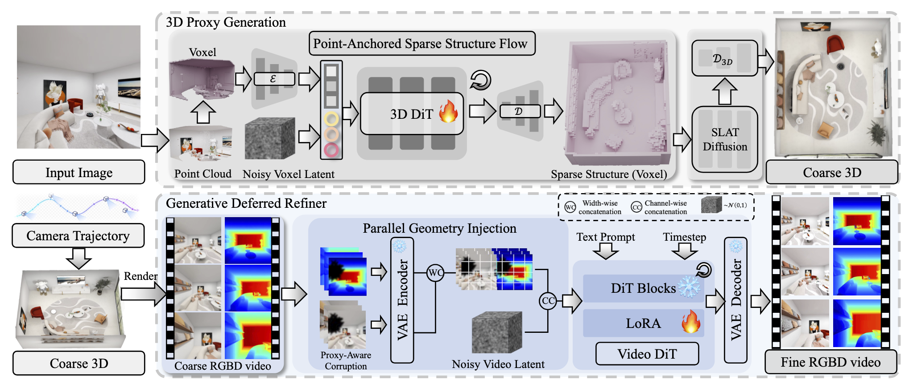
Each video shows the input image alongside the generated spatial RGB-D video.
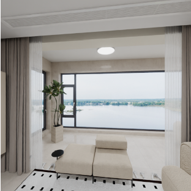
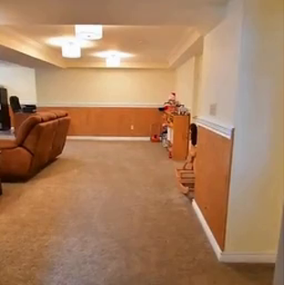
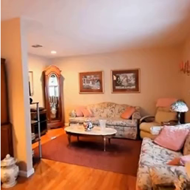
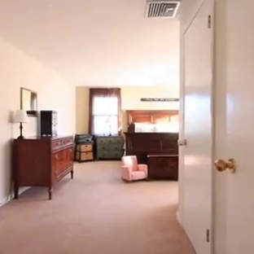
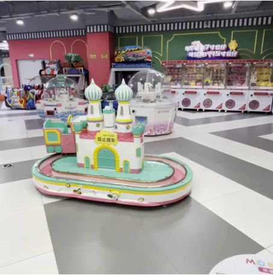
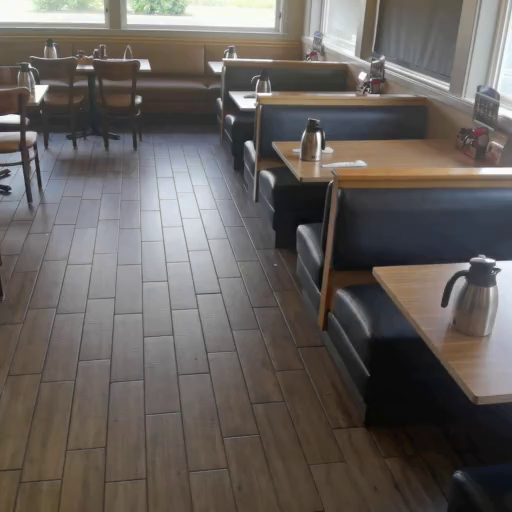
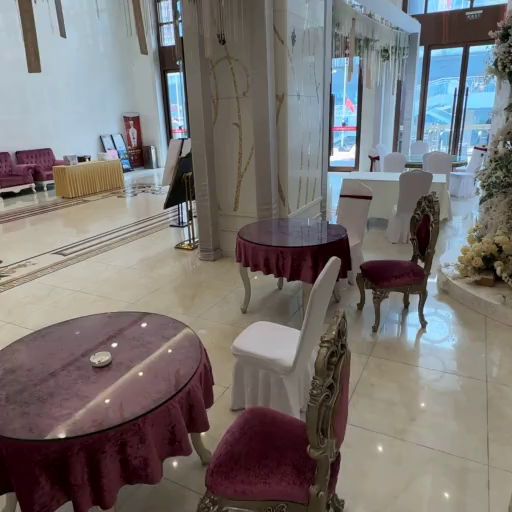
Our method generalizes to challenging outdoor environments with diverse lighting and geometry.
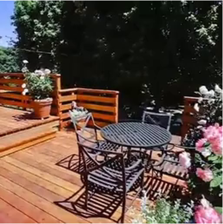
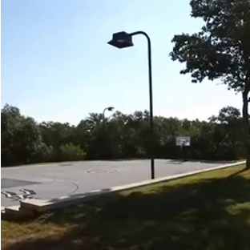
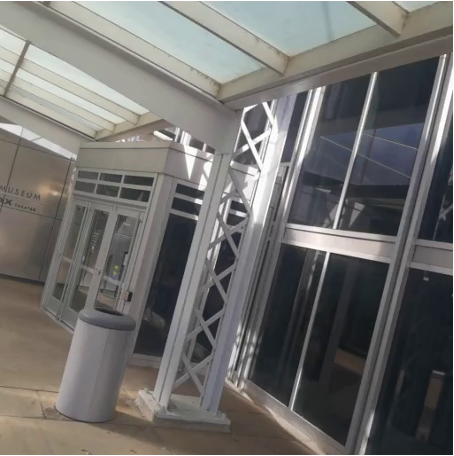
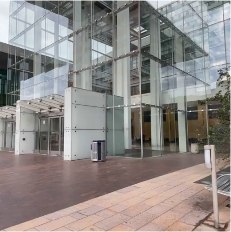
By exploiting the persistent spatial memory encoded in the global 3D proxy, SpatialCrafter extends video generation beyond a single clip—synthesizing long sequences chunk by chunk while preserving visual consistency across all segments. Both foreground details and background structure remain coherent throughout, and the overall appearance style stays uniform from the first frame to the last.
@article{spatialcrafter2026,
title = {SpatialCrafter: Single Image World Modeling with Generative 3D Proxies},
author = {Fang, Chuan and others},
journal = {arXiv preprint},
year = {2026}
}
We thank the teams behind TRELLIS and WanVideo for open-sourcing their models, and the authors of SpatialGen for the website template.